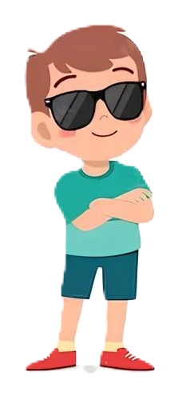

A
Jenis transformasi
Rotasi / Perputaran
.png)
Putar,
kata yang berarti membuat sesuatu bergerak dalam lingkaran.
kata yang berarti membuat sesuatu bergerak dalam lingkaran.

Seorang anak sedang bermain fidget spinner bersama temannya di taman.
Mereka bermain sambil berlari memutari air mancur

Terdapat dua peristiwa perputaran yang mereka lakukan.
Memutar Fidget Spinner
Memutari air mancur

Coba kamu amati perputaran di atas, ada bagian atau objek yang tidak bergerak. Yang
manakah itu?
A
Bagian tengah spinner dan air mancur
B
Ujung spinner dan anak yang berlari
Objek atau bagian yang tidak bergerak tersebut disebut
PUSAT ROTASI


Contoh lain saat jarum jam berputar, pusat rotasinya berada dibagian tengah jam

Kita menggunakan SUDUT untuk mengetahui seberapa jauh kita memutar objek
Lihatlah Ketika jarum jam bergerak dari 12 ke 3 yang berpindah 90 derajat
Klik untuk melihat

Bagaimana ketika jarum jam bergerak dari ke 12 ke 9. Berapakah sudutnya?
A
90 derajat
B
270 derajat

Jawaban yang benar bergantung pada ARAH ROTASINYA hehe.
90 derajat
Klik untuk melihat
270 derajat
Klik untuk melihat
ARAH ROTASI ada dua yaitu searah jarum jam dan berlawanan arah jarum jam.

Searah jarum jam
Berlawanan arah jarum jam

Sekarang kamu telah mengetahui PUSAT, SUDUT, dan ARAH ROTASI.
Saatnya kita tau pengertian Rotasi.
Jadi, Apa itu Rotasi?

Rotasi adalah jenis transformasi yang memutar setiap titik pada gambar sampai sudut dan arah tertentu terhadap pusat rotasi.

Tes Pemahaman
TES PERTAMA
Titik B dirotasikan searah jarum jam dengan pusat titik P
B
P
Seberapa jauh titik B dirotasikan terhadap titik P ?
90°
30°
120°
180°
TES KEDUA
Titik B dirotasikan berlawanan arah jarum jam dengan pusat titik P sejauh 90°
P
B
Pilih salah satu titik abu-abu yang merupakan hasil dari rotasi titik B / B'

Silakan kamu eksplorasi tentang rotasi pada bangun datar di bawah ini yaa!
Masukkan derajat dan
pilih arah rotasi lalu tekanlah tombol Rotasi
pilih arah rotasi lalu tekanlah tombol Rotasi


Terakhir lihatlah beberapa contoh rotasi di kordinat kartesius!

Titik A ( 0 , -2 ) dirotasikan dengan pusat titik P ( 0 , 1 ) sejauh -90°.

P
-90°
A
A'
Diketahui:
Pusat rotasi adalah titik P ( 0 , 1 ) dengan sudut rotasi -90° dan arah rotasi searah jarum jam
Diperoleh:
Titik A ( 0 , -2 ) dirotasikan pada titk P sejauh -90° menghasilkan titik A’ ( 1 , 3 )

Segitiga ABC dengan kordinat A ( -1 , -2 ), B ( 2 , -2 ), C ( 2 , 0) dirotasikan terhadap titik P sejauh 180°
180°
180°
180°
P
A
B
C
A'
C'
B'
Diketahui:
Pusat rotasi adalah titik P ( -1 , 1 ) dengan sudut rotasi 180° dan arah rotasi berlawanan arah jarum jam
Catatan:
Setiap Titik yakni titik A, B, dan C dirotasikan 180° berlawanan arah jarum jam
Diperoleh:
Segitiga A'B'C' dengan kordinat A' ( -1 , 4 ), B' ( -4 , 5 ), C' ( -3 , 2)

Trapesium ABCD dengan kordinat A ( 0 , 0 ), B ( 0 , 2 ), C ( 2 , 2) , C ( 3 , 0) dirotasikan terhadap titik A sejauh 180°
A
B
C
D
B'
C'
D'
180°
Diketahui:
Pusat rotasi adalah titik A ( 0 , 0 ) dengan sudut rotasi 180° dan arah rotasi berlawanan arah jarum jam
Catatan:
Setiap Titik sudut Trapesium yakni titik B, C, dan D dirotasikan 180° berlawanan arah jarum jam kecuali titik A karena merupakan pusat rotasi
Diperoleh:
Segitiga A'B'C' dengan kordinat A' ( 0 , 0 ), B' ( 0 , -2 ), C' ( -2 , 2) D' ( 0 , -3 )
Selanjutnya kita akan mempelajari Dilatasi
Namun setelah kamu kerjakan tes pemahaman di bawah ya!
Tes Pemahaman
TES KETIGA
Terdapat titik A ( 4 , -2 ). Jika titik A dirotasikan terhadap titik ( 0 , -2 ) sejauh 90°, tentukan kordinat titik A'
Klik pada kordinat untuk memunculkan titik lalu cek jawabanmu pada tombol "Check"
TES KETIGA
Terdapat segitiga ABC. Segitiga ABC dirotasikan terhadap titik ( 0 , 0 ) sejauh -90°, tentukan kordinat segitiga A'B'C'
A
B
C
Pindahkan titik-titik sudut segitiga hijau hingga membentuk kordinat segitiga A'B'C'